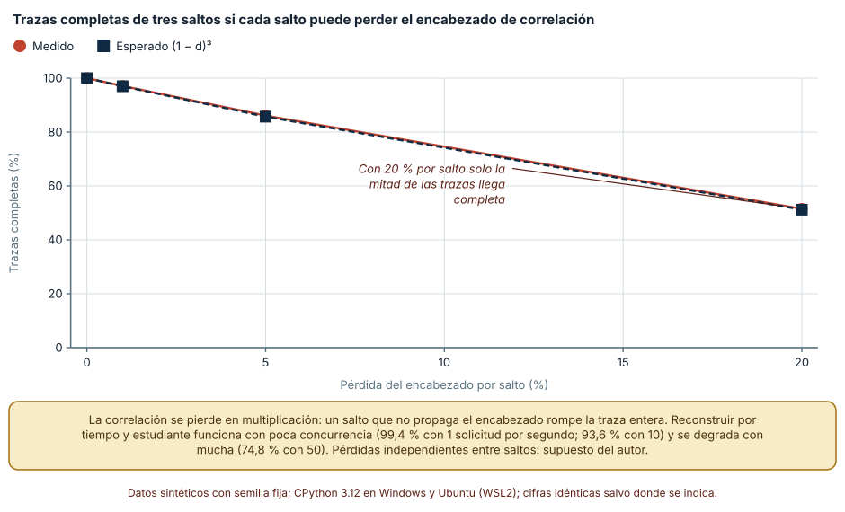
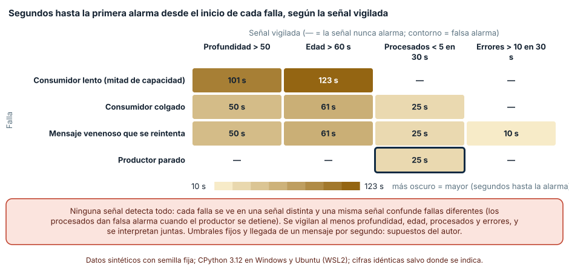
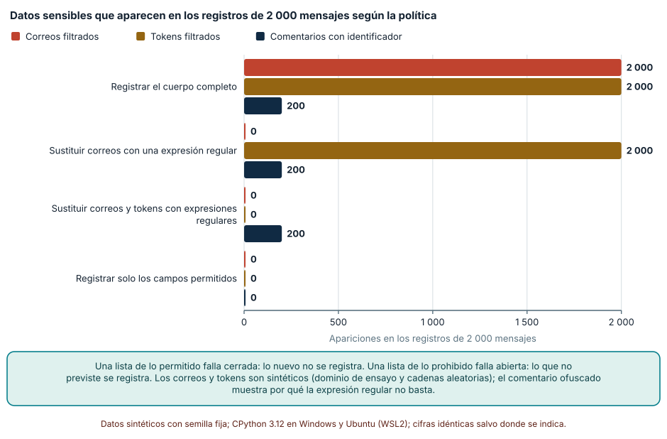

← SE-381 — Anti-corruption layers y traducción de modelos · ↑ Parte 31 · 📚 Índice completo · 🌐 Portal · SE-383 — Taller: provocar y contener mensajes duplicados →
Punto profesional y fundamento pedagógico
Punto profesional. La clase existe para que puedas ver y proteger un flujo que cruza servicios, colas y proveedores: aprenderás a medir cuántas trazas completas sobreviven cuando los saltos pierden el identificador de correlación, qué señal de un consumidor detecta cada tipo de falla (y cuál da falsas alarmas) y cuántos datos sensibles filtra cada política de registro, antes de que un incidente obligue a investigar sin datos o con demasiados.
Por qué aparece aquí. Sigue a Anti-corruption layers y traducción de modelos: ya hay mensajes con sobre y esquema, colas, relevos y traducciones, y cada pieza puede fallar sin ruido. En el flujo de la plataforma de entregas, una entrega que no recibe nota atraviesa seis componentes; sin correlación nadie sabe dónde se detuvo, y registrar todo lo que pasa por el camino filtra los datos de los estudiantes a los registros.
Error conceptual que debe corregir. Creer que observabilidad es «tener registros» y seguridad es «poner autenticación en la puerta». Un registro sin identificador de correlación no permite reconstruir un flujo, una alarma de profundidad de cola no ve a un productor parado ni a un mensaje venenoso, y registrar el cuerpo completo de cada mensaje convierte los registros en la copia menos protegida de todos los datos personales.
Secuencia de aprendizaje. Antes de leer los resultados, predices qué fracción de trazas de tres saltos queda completa si cada salto pierde el encabezado el 5 % de las veces, cuál de cuatro señales detecta a un consumidor colgado y cuál da una falsa alarma cuando se detiene el productor, y cuántos correos y tokens quedan en los registros con una política que solo sustituye correos con una expresión regular; después mides las tres cosas y comparas con tu predicción. La secuencia usa predicción, explicación propia, contraste y recuperación. ICAP distingue participación de construcción de conocimiento; How People Learn II exige conectar conocimiento previo, contexto y transferencia; la práctica de recuperación respalda producir de nuevo la explicación tras una demora; y Education for Life and Work exige devolución que explique la causa del error.
Evidencia de aprendizaje. observabilidad-log.md con las predicciones, las tres figuras reproducidas, la lista de señales y alarmas del flujo con su umbral y a qué falla responde cada una, la política de registro (campos permitidos, redacción, retención) y una tabla de amenazas de la integración con su control.
Límite de la conclusión. Las pérdidas del encabezado (0, 1, 5 y 20 %), el consumo de una unidad por segundo, los umbrales de cada señal y los correos y tokens sintéticos son supuestos o construcciones del autor; no se usó ninguna herramienta de trazado, de métricas ni de análisis de registros, ni un corredor real. Los resultados muestran la lógica de cada señal y de cada política, no la calidad de una plataforma de observabilidad.
Trazabilidad fuente → afirmación
| Fuente primaria u oficial | Afirmación que respalda | Lo que no prueba |
|---|---|---|
| W3C Trace Context | Especifica los encabezados traceparent y tracestate para propagar el contexto de una traza entre servicios. | No dice cómo propagarlo en cada corredor ni garantiza que todos los saltos lo hagan. |
| OpenTelemetry: convenciones semánticas de mensajería | Define atributos y estructura de trazas para productores y consumidores de mensajes, incluido el contexto en los encabezados del mensaje. | No mide cuántas trazas se pierden en un despliegue concreto. |
| Google SRE: monitorización de sistemas distribuidos | Propone vigilar señales de síntomas (latencia, tráfico, errores, saturación) y evitar alarmas que no requieran acción. | No fija los umbrales de esta clase. |
| OWASP: Logging Cheat Sheet | Recomienda no registrar datos sensibles, tokens ni secretos y proteger el acceso y la integridad de los registros. | No evalúa las políticas de redacción por expresiones regulares de esta clase. |
| OWASP: Seguridad de APIs | Cataloga riesgos de las interfaces (autorización a nivel de objeto, consumo sin límites, mala configuración) que aplican a integraciones. | No evalúa los controles de la plataforma de entregas. |
Antes de empezar
Recupera lo aprendido en SE-379 (la firma y la marca de tiempo protegen un webhook) y en la Parte 20 sobre registros y métricas de un servicio. Recupera de SE-374 el sobre del mensaje, que ya lleva la correlación. La pregunta activa es: si esta entrega no recibe nota, ¿cómo sé en qué componente se detuvo, y qué dato de la persona queda escrito en un lugar donde no debería?
Prerrequisitos
- Haber completado
SE-381o poder explicar qué traduce una capa anticorrupción. - Python 3.11 o posterior; los experimentos usan solo la biblioteca estándar y generadores con semilla fija.
- Entender qué es una métrica, un registro, una traza y una expresión regular.
Problema auténtico
Un estudiante reclama que entregó su tarea el jueves y no tiene nota. El equipo busca en los registros del servicio de entregas, que muestran la recepción; en los del calificador, que registran miles de calificaciones sin forma de relacionarlas con esa entrega; y en los del servicio de avisos, que no mencionan nada. Nadie sabe si el mensaje se perdió, se calificó y falló el aviso o sigue en la cola. Una alarma de «cola con más de 50 mensajes» nunca saltó porque el problema era un consumidor colgado con la cola casi vacía a esa hora. Al revisar los registros para investigar, alguien encuentra correos y tokens de acceso de estudiantes escritos en texto claro porque el servicio registraba el cuerpo completo de cada mensaje para depurar. El incidente tiene tres capas: no se puede seguir un flujo, las alarmas no ven todas las fallas y los registros son un riesgo de seguridad.
Objetivos observables
Al terminar podrás:
- medir cuántas trazas completas sobreviven según la probabilidad de que cada salto pierda el identificador de correlación, y cuánta precisión tiene reconstruir por tiempo;
- comparar cuatro señales de un consumidor frente a cuatro fallas por tiempo de detección y falsas alarmas;
- medir qué datos sensibles filtran cuatro políticas de registro y por qué una lista de permitidos supera a una de prohibidos;
- enumerar las amenazas de una integración (suplantación, manipulación, repetición, exposición, abuso) y el control de cada una;
- escribir la política de señales, registro y retención de un flujo.
Mapa conceptual
Ver la notación fuente del diagrama
flowchart LR
A[Petición con correlación] --> B[Servicio A]
B -->|encabezados del mensaje| C[Cola]
C --> D[Consumidor B]
D --> E[Proveedor externo]
B --> F[Registros sin datos sensibles]
D --> F
C --> G[Métricas: profundidad, edad, procesados, errores]
D --> G
F --> H[Reconstruir el flujo por correlación]
G --> I[Alarmas por síntoma]
A --> J[Controles: autenticar, autorizar, firmar, limitar]El mapa separa tres necesidades que comparten datos: seguir un flujo (correlación), vigilar su salud (métricas y alarmas) y protegerlo (controles y registros seguros). El contexto viaja dentro del mensaje, no en la memoria de quien lo atiende.
Temas y por qué importan
| Tema | Por qué cambia una decisión profesional | Evidencia mínima |
|---|---|---|
| Correlación y trazas | Sin un identificador común no se reconstruye un flujo entre servicios. | Predicción, traza causal y contraejemplo de Correlación y trazas en observabilidad-log.md |
| Propagación por mensajes | El contexto debe viajar en el mensaje, también en lotes. | Predicción, traza causal y contraejemplo de Propagación por mensajes en observabilidad-log.md |
| Señales y alarmas de un flujo asíncrono | Cada falla se ve en una señal distinta y una misma señal confunde fallas. | Predicción, traza causal y contraejemplo de Señales y alarmas de un flujo asíncrono en observabilidad-log.md |
| Seguridad de la integración | Una integración es una superficie de ataque y de abuso. | Predicción, traza causal y contraejemplo de Seguridad de la integración en observabilidad-log.md |
| Registros seguros | Los registros copian datos y deben protegerse como ellos. | Predicción, traza causal y contraejemplo de Registros seguros en observabilidad-log.md |
Conceptos y decisiones
1. Correlación y trazas
Una traza es el recorrido de una petición o de un flujo por varios componentes; cada paso es un tramo (span) con un padre. Para unir tramos de procesos distintos hace falta que cada uno reciba y reenvíe un identificador de correlación o un contexto de traza. W3C Trace Context estandariza esto en un encabezado, traceparent, que lleva el identificador de la traza y del tramo padre. La propiedad crítica es que la cadena se rompe en el primer eslabón que no reenvía el contexto: un solo servicio que lo ignora hace que las trazas posteriores aparezcan como flujos independientes. Por eso la propagación se prueba, no se supone.
2. Propagación por mensajes
En una llamada síncrona el contexto viaja en un encabezado HTTP; en un mensaje, debe viajar en los encabezados o atributos del propio mensaje, porque el consumidor procesa más tarde, quizá en otro proceso, y no hay petición que lo acompañe. El productor inyecta el contexto al publicar y el consumidor lo extrae al recibir. Cuando un consumidor procesa lotes de mensajes de trazas distintas, un solo tramo tiene varios orígenes: se modela con enlaces (links) a las trazas de origen, no con un único padre. Y cuando la correlación falta, reconstruir por tiempo y por entidad funciona con poca concurrencia y se degrada rápidamente cuando hay muchas peticiones simultáneas.
3. Señales y alarmas de un flujo asíncrono
Un flujo asíncrono falla de formas que una alarma sola no ve. La profundidad de la cola crece cuando el consumidor es lento o está colgado, pero no cuando el productor se detiene. La edad del mensaje más viejo detecta un mensaje atascado aunque la cola sea corta. La tasa de procesados cae cuando el consumidor se cuelga, pero también cuando simplemente no hay trabajo: da falsas alarmas fuera del horario de uso. La tasa de errores detecta un mensaje venenoso que se reintenta sin fin, pero no a un consumidor colgado que no produce errores. La práctica es vigilar varias señales, definir para cada alarma qué acción exige y qué falla cubre, y evitar alarmas que despierten a alguien sin que haya nada que hacer.
4. Seguridad de la integración
Una integración es un canal por el que entran datos y órdenes: sus amenazas habituales son suplantación (alguien se hace pasar por el productor), manipulación (se altera el mensaje), repetición (se reenvía uno válido), exposición (los datos se leen donde no debían) y abuso (volumen o frecuencia que agota recursos). Los controles correspondientes son autenticar al productor y al consumidor, firmar los mensajes con marca de tiempo, autorizar a nivel de operación y de objeto, cifrar el canal, limitar tamaño y frecuencia, y dar a cada servicio el menor privilegio posible sobre las colas y los temas. Un productor comprometido o un consumidor con permisos de más es una amenaza interna que ninguna firma detiene.
5. Registros seguros
Los registros son datos derivados: lo que se escribe en ellos se copia fuera del control de la base. Registrar el cuerpo completo de un mensaje para depurar copia correos, calificaciones y tokens a un lugar con retención larga y acceso amplio. La política segura es una lista de campos permitidos (identificadores, tipos, tiempos, códigos de resultado) y no una lista de campos prohibidos, porque lo que se olvida prohibir se registra y lo que se olvida permitir simplemente no se ve. La redacción con expresiones regulares es una red de seguridad y no un control: falla con formatos que no se previeron y con texto libre. Los secretos y tokens no se registran nunca, ni siquiera redactados.
Cuántas trazas sobreviven a la pérdida del encabezado
Se simulan 10 000 flujos de tres saltos (por ejemplo, entregas, cola, calificador). En cada salto el encabezado de correlación se pierde con probabilidad d (0, 1, 5 y 20 %). Una traza está completa si ningún salto lo perdió. Aparte, para ver qué se puede recuperar sin el encabezado, se reconstruye por tiempo: cada evento se asocia con la solicitud del mismo estudiante más cercana en una ventana de dos segundos, con 1, 10 y 50 solicitudes por segundo y 2 000 solicitudes.
completas = sum(all(r.random() >= d for _ in range(3)) for _ in range(10_000))
cand = [q for q in solicitudes if q.t < te and te - q.t <= 2.0 and q.est == est]
acierta = cand and min(cand, key=lambda q: abs(te - 1.0 - q.t)).id == id_verdadero| Pérdida por salto | Trazas completas de 10 000 | Medido | Esperado (1 − d)³ |
|---|---|---|---|
| 0 % | 10 000 | 100,0 % | 100,0 % |
| 1 % | 9 712 | 97,1 % | 97,0 % |
| 5 % | 8 610 | 86,1 % | 85,7 % |
| 20 % | 5 154 | 51,5 % | 51,2 % |
La correlación se pierde en multiplicación: con solo el 5 % de pérdida por salto, casi 14 de cada 100 flujos quedan incompletos, y con el 20 % lo está la mitad. La reconstrucción por tiempo y estudiante acertó el 99,4 % con 1 solicitud por segundo, el 93,6 % con 10 y el 74,8 % con 50: sirve como último recurso en un entorno tranquilo y se degrada justo cuando hay más carga y más necesidad.

Cómo leer la figura. El eje horizontal es la pérdida del encabezado por salto y el vertical, el porcentaje de trazas completas; la línea coral es lo medido y la azul oscura la curva esperada (1 − d)³. Mira cómo se superponen: la pérdida se multiplica a lo largo de la cadena, y con 20 % por salto solo la mitad de las trazas llega entera. Dónde deja de valer: las pérdidas son independientes entre saltos, algo optimista: un servicio que ignora el encabezado lo pierde siempre, no una vez de cada veinte. La reconstrucción por tiempo supone eventos con un retardo de entre 0,5 y 1,5 segundos y estudiantes uniformemente repartidos; con retardos mayores o pocos estudiantes activos sería peor.
Qué señal ve cada falla
Se simula un consumidor durante 600 segundos con un mensaje por segundo. La falla comienza en el segundo 100. Hay cuatro fallas: un consumidor lento (procesa un mensaje cada dos segundos), uno colgado (no procesa nada), un mensaje venenoso (el consumidor reintenta siempre el mismo y no avanza) y un productor parado (no llegan mensajes). Se vigilan cuatro señales con umbral fijo: profundidad mayor que 50, edad del mensaje más viejo mayor que 60 s, menos de 5 mensajes procesados en 30 s y más de 10 errores en 30 s. Se mide el tiempo hasta la primera alarma desde el inicio de la falla.
profundidad = len(cola)
edad = t - cola[0] if cola else 0
procesados_30s = sum(procesados[t - 29:t + 1])
errores_30s = sum(errores[t - 29:t + 1])| Falla | Profundidad > 50 | Edad > 60 s | Procesados < 5 en 30 s | Errores > 10 en 30 s |
|---|---|---|---|---|
| Consumidor lento (mitad de capacidad) | 101 s | 123 s | nunca | nunca |
| Consumidor colgado | 50 s | 61 s | 25 s | nunca |
| Mensaje venenoso que se reintenta | 50 s | 61 s | 25 s | 10 s |
| Productor parado | nunca | nunca | 25 s (falsa alarma) | nunca |
El consumidor lento solo lo ven las señales de acumulación y tarda más de un minuto y medio; el colgado lo ve primero la tasa de procesados, a los 25 segundos. El veneno lo ve la tasa de errores a los 10 segundos, antes que ninguna otra. Y el productor parado activa la alarma de procesados, que es una falsa alarma respecto de la falla del consumidor: no hay nada que arreglar en él. Ninguna señal sola cubre las cuatro fallas, y la que cubre más (procesados) las confunde.

Cómo leer la figura. Cada fila es una falla y cada columna una señal; el color más oscuro es una alarma más lenta, el guion es una señal que nunca alarma (punto ciego) y el contorno marca una falsa alarma. Mira cuántos guiones hay en cada fila y cada columna: ninguna señal cubre todas las fallas y la falla del productor solo aparece como una falsa alarma. Dónde deja de valer: los umbrales y la ventana de 30 segundos son del autor, la llegada es constante y no hay estacionalidad; con tráfico real los umbrales fijos producen más falsas alarmas fuera de horario. La figura enseña a cruzar señales, no valores de umbral.
Qué filtra cada política de registro
Se generan 2 000 mensajes sintéticos con correo, token de acceso (tok_ y 16 caracteres hexadecimales), nota, identificador de entrega y un comentario; en 200 de ellos el comentario contiene el identificador del estudiante escrito con «[arroba]» en lugar de la arroba. Se registran con cuatro políticas y se busca en el texto de los registros cada correo y cada token, y se cuenta cuántos comentarios dejan salir el identificador.
def con_regex(m):
s = json.dumps(m)
s = re.sub(r"[\w.]+@[\w.]+", "[correo]", s)
return re.sub(r"tok_[0-9a-f]+", "[token]", s)
def con_lista(m): return json.dumps({k: m[k] for k in ("entrega", "nota")})| Política de registro | Correos filtrados | Tokens filtrados | Comentarios con identificador |
|---|---|---|---|
| Registrar el cuerpo completo | 2 000 | 2 000 | 200 |
| Sustituir correos con una expresión regular | 0 | 2 000 | 200 |
| Sustituir correos y tokens con expresiones regulares | 0 | 0 | 200 |
| Registrar solo los campos permitidos | 0 | 0 | 0 |
Registrar todo filtra todo. Cada expresión regular cierra un tipo de dato y deja abierto el siguiente: tras sustituir correos aún salen 2 000 tokens, y tras sustituir ambos aún salen los 200 comentarios, porque un identificador escrito como «alumno7 [arroba] ejemplo.test» no coincide con ningún patrón. La lista de permitidos no filtra nada de lo medido porque no registra lo que no se le dijo que registrara.

Cómo leer la figura. Cada grupo es una política de registro y cada color, un tipo de dato sensible que se puede encontrar buscando en los registros. Mira cómo cada expresión regular borra una barra y deja las otras, hasta que solo la lista de campos permitidos deja el gráfico vacío. Dónde deja de valer: los datos son sintéticos y los patrones son simples; las expresiones más completas filtran más, pero el principio no cambia. La lista de permitidos puede dejar sin información útil para depurar: su costo es que hay que añadir campos con criterio cuando hacen falta.
Definiciones de trabajo
- traza: recorrido de una petición o de un flujo por varios componentes, formado por tramos relacionados.
- identificador de correlación: valor que acompaña a un flujo y permite unir los registros y tramos de componentes distintos.
- propagación de contexto: reenvío del contexto de una traza en los encabezados o atributos de cada llamada o mensaje.
- lista de permitidos: política que registra únicamente los campos expresamente autorizados.
- mensaje venenoso: mensaje que un consumidor no puede procesar y que, reintentado sin fin, impide avanzar a los siguientes.
Las definiciones son operativas para la plataforma de entregas. No convierten términos con una historia más amplia en sinónimos y deben contrastarse con la documentación primaria enlazada al final.
Ejemplo mínimo
El fragmento inyecta un identificador de correlación en un mensaje y lo extrae en el consumidor. Antes de ejecutarlo, predice qué ocurre si el productor olvida inyectarlo.
import uuid
def publicar(cuerpo, corr=None):
return {"corr": corr, "cuerpo": cuerpo}
def consumir(msg):
return msg["corr"] or f"sin-correlacion-{uuid.uuid4().hex[:6]}"
print(consumir(publicar("n", corr="abc")), consumir(publicar("n")))La primera llamada devuelve abc; la segunda, un identificador inventado que no une nada con el origen. Registra versión de Python y salida; después haz que el consumidor falle con un mensaje sin correlación y registre el aviso.
Ejemplo profesional
El equipo de la plataforma define la observabilidad del flujo de entrega. Correlación: el sobre del mensaje lleva traceparent; el servicio de entregas lo genera, cada servicio lo reenvía, y una prueba de integración publica una entrega y comprueba que los registros de los tres servicios comparten el mismo identificador. Señales: cuatro alarmas con acción asociada: profundidad mayor que 100 durante cinco minutos (revisar el consumidor), edad del mensaje más viejo mayor que 10 minutos (mensaje atascado o consumidor lento), errores por minuto mayores que 5 (veneno: derivar a la cola de fallidos) y, solo en horario de clases, menos de un mensaje procesado en 5 minutos (consumidor colgado); no alarman por la ausencia de tráfico. Seguridad: cada servicio tiene credenciales propias con permisos mínimos sobre sus colas, los mensajes entrantes de proveedores se verifican con firma y marca de tiempo (SE-379), y el tamaño y la frecuencia están limitados. Registros: lista de campos permitidos (identificador de entrega, tipo, resultado, duración), sin cuerpos, correos ni tokens; retención de 30 días; el acceso lo da un rol de operaciones. Antes de activar, revisan una muestra de registros de ensayo buscando datos sintéticos sensibles. Compara con el incidente de la nota perdida: se encuentra la entrega por su correlación, la alarma de edad habría saltado a los diez minutos y los registros no contienen datos de estudiantes.
Práctica guiada
- Dibuja el flujo de una entrega por seis componentes e indica dónde se inyecta y dónde se extrae el contexto.
- Predice cuántas trazas de tres saltos quedan completas con el 5 % de pérdida por salto.
- Reproduce la tabla de trazas y la reconstrucción por tiempo con las mismas semillas.
- Simula las cuatro fallas y las cuatro señales y completa la tabla de detección.
- Registra los 2 000 mensajes con las cuatro políticas y busca los datos sensibles.
- Escribe las alarmas con su acción, la política de registro y la tabla de amenazas con su control.
- Entrega
observabilidad-log.mdy pide a otra persona que encuentre una falla que tus alarmas no verían.
Ejercicios
- Probabilidad: cuatro saltos con 3 % de pérdida cada uno; calcula las trazas completas de 10 000 y cuántos saltos debería tener una ruta para bajar del 90 %.
- Señal: un consumidor procesa mensajes pero escribe en una base que falla en silencio; razona qué señales lo ven y añade la que falta.
- Alarma: la alarma de procesados bajos salta cada noche; propón una condición que evite la falsa alarma sin perder el consumidor colgado.
- Registro: el equipo necesita el correo en los registros para soporte; diseña una alternativa que permita encontrar a una persona sin escribir su correo.
Reto verificable
Entrega observabilidad-log.md con las predicciones, las tres tablas reproducidas con las mismas semillas, las alarmas con su acción, la política de registro y la tabla de amenazas. Se aprueba si otra persona ejecuta el código desde un checkout limpio, obtiene 8 610 trazas completas con el 5 % de pérdida, la tabla de detección de cuatro fallas por cuatro señales y 2 000 tokens filtrados con la política de solo correos, y puede decir qué falla no detectan tus alarmas. No se aprueba por una política de registro de «enmascarar lo sensible» sin lista de permitidos ni por una alarma sin acción asociada.
Caso conductor
El flujo de entrega, calificación, aviso y registro de la plataforma es el caso conductor de la Parte 31. Esta clase deja el décimo artefacto: la política de correlación, señales, seguridad y registros del flujo. SE-383 pone a prueba todo el conjunto en un taller que provoca y contiene mensajes duplicados. Cambia después una sola decisión, quitar el encabezado de un salto, y observa qué parte de la investigación deja de ser posible.
Preguntas frecuentes
¿Es lo mismo observabilidad que monitoreo?
No. El monitoreo vigila señales que se decidieron de antemano (una alarma por profundidad); la observabilidad es la capacidad de responder preguntas nuevas sobre el sistema con los datos que emite, como «¿dónde se detuvo esta entrega?». Se necesita ambos: alarmas para enterarse y datos con correlación para investigar.
¿Cuánto debo muestrear las trazas?
Lo suficiente para ver los flujos que importan: con un muestreo del 1 % se pierde la traza del flujo que falló. Una práctica habitual es conservar todas las trazas con error o con latencia alta y muestrear las demás, decidiendo al final del flujo y no al principio.
¿Es seguro registrar identificadores de estudiantes?
Un identificador interno sin significado, que solo la plataforma puede relacionar con una persona, es mucho menos riesgoso que un correo o un nombre, y permite encontrar el caso. Aun así, es un dato personal en el sentido legal, así que su retención y acceso se rigen por la política de privacidad (SE-358).
¿Basta con cifrar los registros?
El cifrado protege del robo del medio, no de quien tiene acceso legítimo a leerlos. Lo que no debe estar en un registro no debe estar, cifrado o no; la mínima exposición se logra no escribiéndolo.
Fallo controlado y diagnóstico
Reproduce el fallo clásico de la clase: un salto que descarta el encabezado de correlación. Haz que el consumidor genere un identificador nuevo en lugar de reenviar el recibido.
Registra síntoma, entrada mínima, hipótesis, observación que descarta cada hipótesis, causa, corrección y prueba de regresión. Síntoma: en la herramienta de trazas, la entrega aparece en dos flujos distintos y la segunda mitad no tiene origen. Hipótesis rivales: (a) el mensaje fue enviado dos veces; (b) se perdió un tramo por muestreo; (c) un servicio generó una correlación nueva. Prueba: busca en cada servicio el identificador de correlación de la entrega; si el segundo servicio registra otro identificador para el mismo mensaje, la causa es la regeneración. Conclusión: el servicio no propagó el contexto recibido. Regresión: extraer el contexto del mensaje y reenviarlo, y una prueba de integración que publique un mensaje con un identificador conocido y compruebe que aparece idéntico en los registros de todos los servicios. No cambies a la vez la propagación y el muestreo.
Errores comunes y cómo corregirlos
| Síntoma | Causa probable | Corrección |
|---|---|---|
| No se puede seguir una entrega entre servicios | El contexto no viaja en los encabezados del mensaje | Inyectar y extraer el contexto en cada salto, con una prueba de integración |
| La alarma de profundidad no salta con un consumidor colgado | Cola corta o con poco tráfico | Añadir edad del mensaje más viejo y tasa de procesados |
| La alarma de procesados despierta a alguien por la noche | Ausencia de tráfico interpretada como falla | Condicionar a horario y a profundidad o a tráfico esperado |
| Correos y tokens en los registros | Se registra el cuerpo completo | Lista de campos permitidos; secretos nunca |
| Una redacción deja salir datos | Las expresiones regulares no previeron un formato | Lista de permitidos como control principal y redacción como red |
Entorno y archivos clave
work/SE-382/
├── README.md
├── observabilidad/
│ ├── correlacion.py
│ ├── senales.py
│ └── registros.py
├── tests/test_observabilidad.py
└── evidence/observabilidad-log.mdEl README declara plataforma, versión de Python, semillas y comandos. El código de los tres experimentos está en scripts/experiments_part31_b.py (funciones e334_correlacion, e334_senales y e334_fugas) y se ejecuta con python scripts/experiments_part31_b.py. Solo usa la biblioteca estándar y se ejecutó con CPython 3.12.9 en Windows 11 y 3.12.3 en Ubuntu bajo WSL2: las salidas fueron idénticas. Si añades una dependencia (por ejemplo, un SDK de trazado), fija procedencia y versión.
Seguridad, ética y accesibilidad
- los registros y las trazas son datos derivados con retención larga y acceso amplio: aplican los mismos principios de minimización y borrado que la base (
SE-358); - nunca registres tokens, secretos ni cuerpos completos de mensajes con datos de estudiantes; usa identificadores y códigos de resultado;
- una alarma que despierta a una persona sin acción posible es una carga: define para cada alarma qué hacer y quién lo hace;
- los paneles de observabilidad deben ser accesibles (no depender solo del color) y comprensibles para quien atiende un incidente de madrugada;
- los datos de ensayo son sintéticos; no copies registros de producción a un entorno de pruebas.
Puente hacia el trabajo con agentes
Un agente al que se le pide «añade logs para depurar este flujo» suele escribir el cuerpo completo del mensaje y no añade correlación, y al pedirle alarmas propone una sobre la profundidad de la cola. Pídele en cambio que propague el contexto en los encabezados del mensaje, que registre solo campos de una lista de permitidos, que defina para cada alarma la falla que cubre y la acción asociada, y que incluya una prueba que compruebe la correlación entre servicios y busque datos sensibles en los registros generados. Revisa especialmente si registra cuerpos completos y si alguna falla del flujo no tiene ninguna señal: son los dos defectos que esta clase mostró sin aviso.
Transferencia
Traslada el análisis a otro dominio (por ejemplo, un comercio con pedidos, pagos y envíos): cambia los componentes y conserva el procedimiento de propagar la correlación y probarla, cruzar señales por falla, aplicar una lista de campos permitidos y enumerar amenazas con su control. La transferencia está lograda cuando puedes decir qué falla no verías, no cuando el panel tiene muchos gráficos.
Evaluación y evidencia
| Criterio | Evidencia para aprobar |
|---|---|
| comprensión | explicación de la correlación, de las señales de un flujo asíncrono y de los registros seguros |
| corrección | tablas de trazas, señales y fugas reproducibles con las mismas semillas |
| diseño | alarmas con acción, política de registro y tabla de amenazas con controles |
| diagnóstico | reproducción del encabezado descartado con regresión |
| incertidumbre | declaración de que las pérdidas, los umbrales y los datos son supuestos y no se usó una herramienta real |
| reproducibilidad | versiones, comandos, salida y límites declarados |
Fuentes
- W3C Trace Context — encabezados para propagar el contexto de una traza; autoridad: W3C.
- OpenTelemetry: convenciones semánticas de mensajería — trazas y atributos de productores y consumidores; autoridad: proyecto OpenTelemetry.
- Google SRE: monitorización de sistemas distribuidos — señales de síntomas y alarmas con acción; autoridad: Google.
- OWASP: Logging Cheat Sheet — qué registrar y qué no; autoridad: OWASP.
- OWASP: Seguridad de APIs — riesgos de las interfaces; autoridad: OWASP.
Cada fuente respalda el mecanismo indicado; ninguna demuestra que el 86,1 % de trazas completas, los 25 segundos de detección o las 2 000 fugas se observen en una plataforma real. Esa afirmación depende de la herramienta, del tráfico y de la disciplina de cada equipo.
Límites y siguiente paso
Se ejecutaron tres experimentos con datos sintéticos en Windows y Ubuntu (WSL2) con resultados idénticos. No se usó ninguna herramienta de trazado, métricas o registros, ni un corredor real: las pérdidas de encabezado, la llegada constante, los umbrales y los datos sensibles son construcciones del autor, y los resultados no se extrapolan a ninguna plataforma. La siguiente clase es un taller que provoca mensajes duplicados por cinco causas y mide qué defensa contiene cada una.
Glosario
- traza: recorrido de una petición o de un flujo por varios componentes, formado por tramos relacionados.
- identificador de correlación: valor que acompaña a un flujo y permite unir los registros y tramos de componentes distintos.
- propagación de contexto: reenvío del contexto de una traza en los encabezados o atributos de cada llamada o mensaje.
- lista de permitidos: política que registra únicamente los campos expresamente autorizados.
- mensaje venenoso: mensaje que un consumidor no puede procesar y que, reintentado sin fin, impide avanzar a los siguientes.
← SE-381 — Anti-corruption layers y traducción de modelos · ↑ Parte 31 · 📚 Índice completo · 🌐 Portal · SE-383 — Taller: provocar y contener mensajes duplicados →